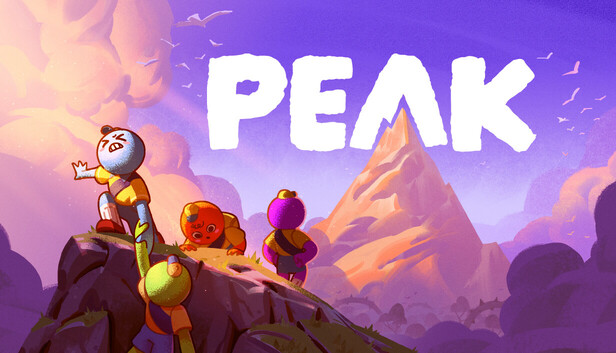
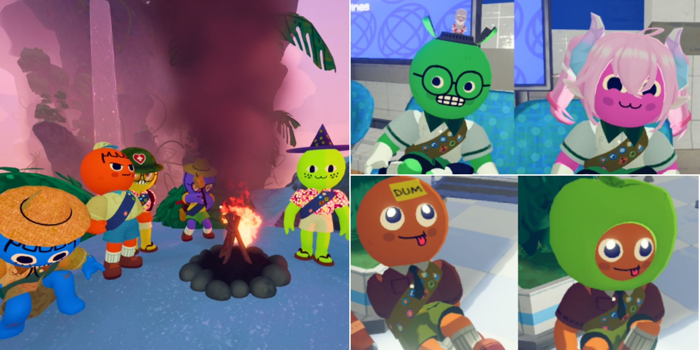
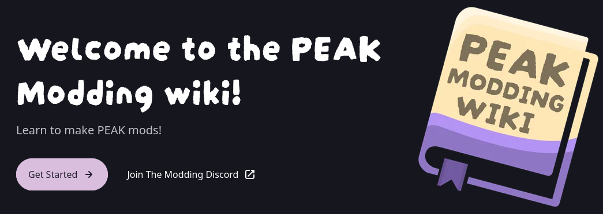

PEAK é um jogo cooperativo de escalada em que você e seus amigos precisam chegar ao topo de uma montanha, lidando com fome, cansaço, clima e terreno imprevisível. O jogo foi feito para ser jogado em grupo, o que o torna perfeito para brincadeiras e experimentos da comunidade.

Mod (de modification, modificação) é um conteúdo criado por fãs que altera ou acrescenta algo ao jogo original. Ele não substitui o jogo: é instalado por cima dele e pode ser ligado ou desligado.

Os mods costumam ser publicados em plataformas comunitárias, como a Thunderstore, que reúne milhares de modificações para vários jogos. Lá, cada mod tem página própria com descrição, versão, número de downloads e autor.
Antes de mais nada, recomendo que você leia a PEAK Modding Wiki, feita pela própria comunidade.

| Tipo | O que faz | Exemplo de ideia |
|---|---|---|
| Cosmético | Muda a aparência | Novas roupas e chapéus |
| Gameplay | Altera regras | Menos fome, mais stamina |
| Itens | Adiciona objetos | Nova corda ou ferramenta |
| Interface | Melhora informações na tela | Contador de altitude |